|
¡Bienvenidos al Espacio! |
|---|
¡Hola, pequeños exploradores del espacio! 🌌 ¿Alguna vez has mirado las estrellas y te has preguntado qué hay allá arriba?
En esta página vamos a aprender juntos cómo viajamos al espacio, quién lo hace y qué hemos descubierto hasta ahora.

Explorar el espacio es como ser un detective galáctico. ¡Prepárate para descubrirlo todo!
Volver arriba
|
¿Cómo exploramos el espacio? |
|---|

Explorar el espacio requiere de muchas herramientas geniales y lugares únicos. Podemos hacerlo de las siguientes maneras:
- Desde la Tierra: Utilizamos telescopios gigantes ubicados en observatorios en la Tierra, como el Gran Telescopio Canarias o el Very Large Telescope, que nos permiten observar estrellas, planetas y galaxias lejanas.
- Desde el espacio: Enviamos sondas espaciales como Voyager, que viajan muy lejos para estudiar planetas y estrellas. O con telescopios como el James Webb, que nos ayudan a ver galaxias y objetos muy lejanos, ¡mucho más allá de lo que podemos ver desde la Tierra!
- Desde laboratorios en órbita: Como la Estación Espacial Internacional (ISS), donde los astronautas viven y trabajan en gravedad cero.
Volver arriba
|
Sondas y Naves Exploradoras: ¡Espías de las estrellas! |
|---|
Aunque los humanos no pueden viajar muy lejos, nuestras sondas y naves espaciales exploran el cosmos por nosotros.

- Sondas que impactan:
- Deep Impact chocó contra un cometa para estudiar su composición.
- DART fue la primera misión para desviar un asteroide.
- Sondas en ruta:
- Voyager 1 y 2 están viajando fuera del Sistema Solar desde 1977.
- New Horizons exploró Plutón y sigue enviando datos sobre el espacio profundo.
La Voyager 1 lleva un disco de oro con sonidos e imágenes de la Tierra, por si alguien en el universo lo encuentra.
Volver arriba
|
¡Échale un ojo a estas webs! |
|---|
-  Agencia Espacial Europea
- Agencia Espacial de EEUU.
- Experimentos para hacer en casa sobre el espacio